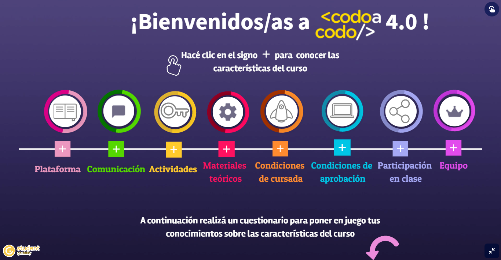

¿Qué es una plataforma?
En la plataforma educativa vas a encontrar todas las herramientas y el acceso a los recursos necesarios que te facilitarán la cursada, el contacto con el/la docente a cargo y el intercambio con tus compañeros/as de la comisión.
¿Cuáles son los espacios de comunicación?
En la "cartelera de novedades" es el foro de comunicación docente y administrativo para la publicación de informaciones generales al módulo. El foro de "Espacio de Consultas" es para el intercambio con el/la docente y los/las compañeros/as de la comisión.
¿Qué tipo de actividades hay en el curso?
Durante la cursada tendrás acceso a actividades de investigación para reafirmar y ampliar los temas teóricos desarrollados en cada una de los contenidos. Además, podrás realizar ejercicios que son obligatorios para poner en juego los contenidos aprendidos.
¿Qué tipo de materiales hay en el curso?
El contenido teórico desarrolla de manera sencilla y con ejemplos para facilitar la comprensión de los temas abordados en la unidad. En varias ocasiones podrás acceder a materiales multimediales relacionados con el contenido teórico que ampliarán o reforzarán los temas vistos.
¿Cómo mantener la regularidad de cursada?
Para mantener la regularidad durante la cursada, además de participar en los encuentros sincrónicos y trabajar con los contenidos publicados semanalmente en la plataforma tendrás que realizar los ejercicios obligatorios en la fechas correspondientes, entregar las actividades prácticas propuestas y te recomendamos invertir 4 horas de práctica semanal para completar satisfactoriamente la cursada. Cubrir los requisitos de cursada mencionados te permitirán acceder al examen integrador.
¿Cómo apruebo el curso?
Las condiciones de aprobación son: mantener la regularidad de la cursada, resolver todos los ejercicios obligatorios y realizar el examen integrador
¿Cómo participar en clase?
Recordá llegar al encuentro sincrónico con la lectura del material teórico de la clase que corresponda. De esta manera, podrás participar activamente con el/la tutora y los/as compañeros/as.
¿Cómo se forma el equipo del curso de Codo a Codo?
Durante toda la cursada el/la tutor/a abordará los contenidos de cada unidad, realizará las correcciones y podrá resolverte las dudas. También contás con facilitadores/as que te acompañará para resolver dudas sobre aspectos de la plataforma, dudas sobre fechas, etc.